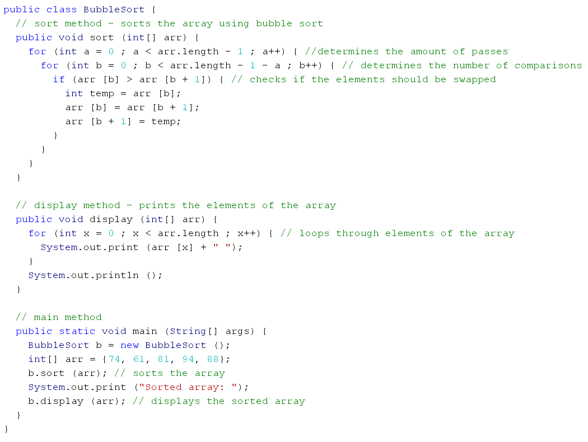
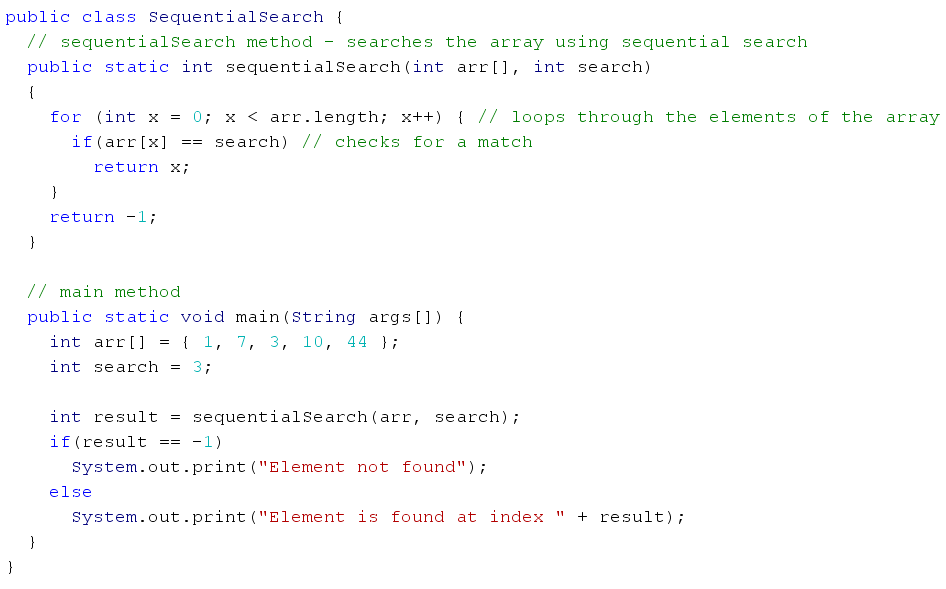

In this tutorial, we are going to cover a basic sort and search.
BUBBLE SORT
Bubble sort is a sort that iterates through an array and compares and switches adjacent elements based on the elements properties, such as size or length. It goes through a maximum of (n-1) passes until the array is completely sorted. For the first pass, the last element is solidified, and for the second pass, the second last element is solidified and so on. During each pass, adjacent elements are swapped (if they are in the incorrect position) throughout the array. This continues until all the elements are in order. Its time complexity is at worst and on average O(n^2), and is at its best at O(n), in which the array is already completely sorted. Bubble sort is never the most efficient sorting method as it is quite slow and there are other better and faster sorting methods that only require a time complexity of O(nlogn). However, it is simple to learn and implement, making it a good sort for beginner programmers. An example of the sort in use is shown below.
SEQUENTIAL SEARCH
Sequential search (also called linear search) is a search that goes through the elements of an array in order to find the desired value. It uses a loop with an if statement to compare each element with the item being searched to determine if there is a match. It is a much slower method than binary search and has a time complexity of O(n).
